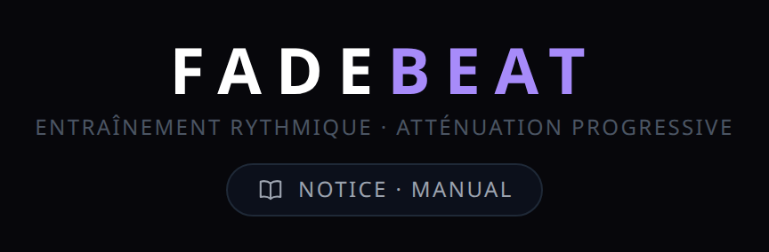
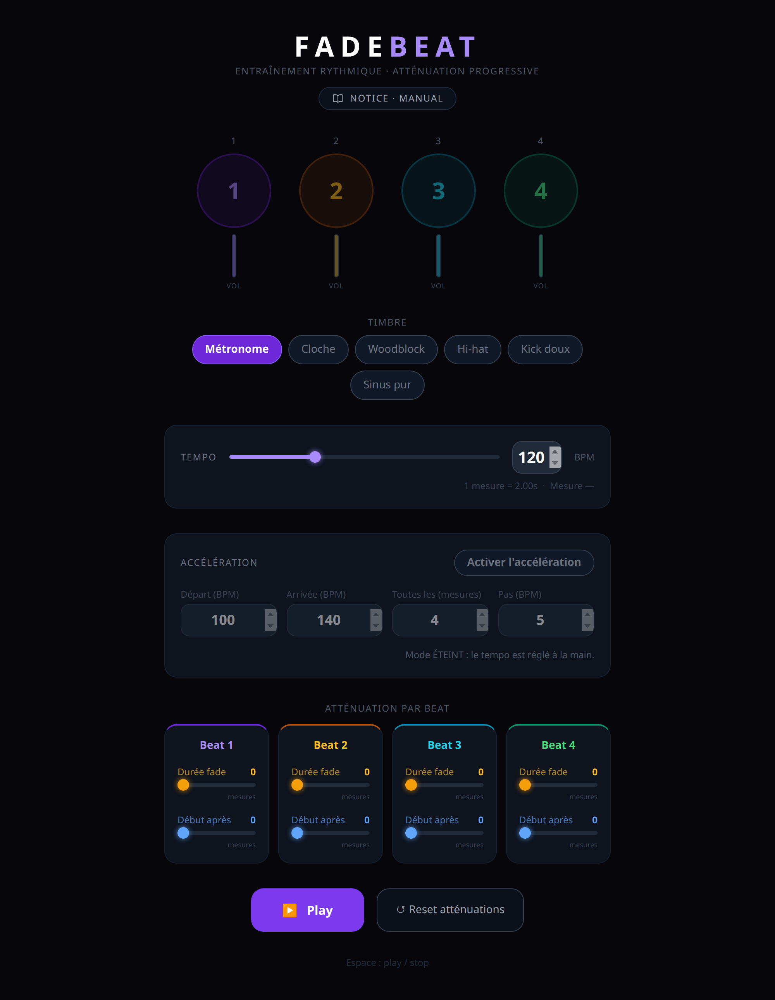
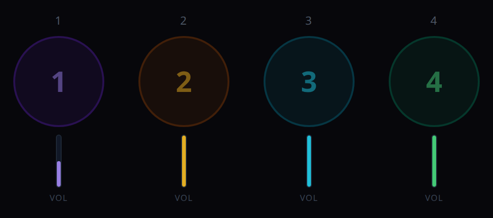
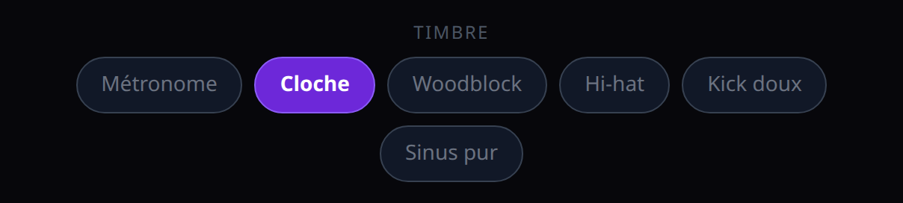
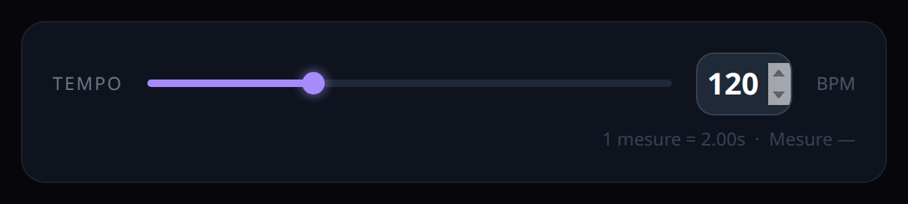
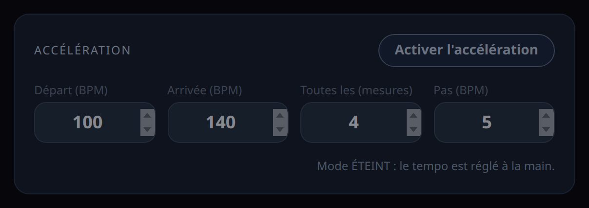
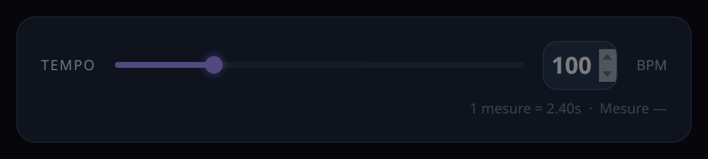
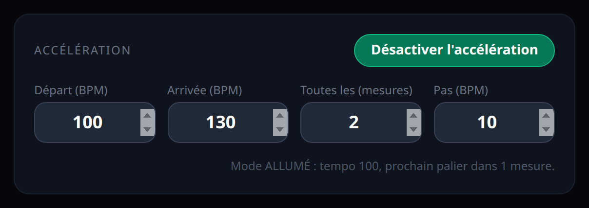
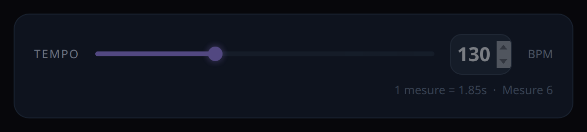
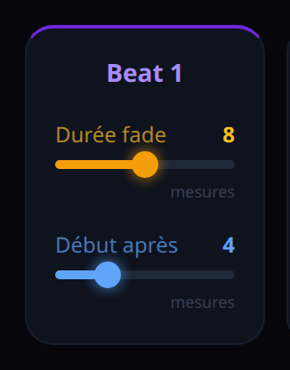

Chapter 1
What FadeBeat is for
FadeBeat is a practice metronome. It does what an ordinary metronome does not: it gradually fades out one or more beats of the bar. The sound disappears, and you keep going. That is how you internalise the pulse instead of leaning on the click.
The idea comes from Jamie Anderson's video “The Free Rhythm Tool That'll Transform Your Groove!”.
How to open it
- Online: open FadeBeat's address in your browser. Nothing to install.
- Locally: double-click the file
FadeBeat.html. The whole app lives in that single file.
Checked in Chrome; designed to work in Firefox, Edge and Safari too (in Firefox the sliders may look less colourful). It needs the internet for its styling (the Tailwind library is loaded online) but no sound is ever downloaded: everything is generated by the browser.
This manual opens from the app itself: the « Notice · Manual » pill, marked with a small open book, sits at the top, centred under the subtitle. It lights up violet when you hover over it. One click opens the manual in a new tab, leaving the app exactly as it is.

The bar always has 4 beats. FadeBeat offers no other time signature.
Chapter 2
The screen at a glance
Everything fits on one page, top to bottom:
- The title, the subtitle and, just underneath, the « Notice · Manual » pill that opens this manual in a new tab.
- The four circles, one per beat, each with its volume bar.
- The choice of sound (six timbres).
- The tempo, slider and BPM field.
- The Acceleration panel.
- Fading per beat: one card per beat, two sliders each.
- The Play and Reset atténuations (reset fades) buttons, then the reminder « Espace : play / stop ».

The app's labels are in French. This manual gives each one as it appears on screen, with its meaning.
Chapter 3
The four circles and the volume bars
Each circle stands for one beat of the bar: 1 violet, the downbeat; 2 amber; 3 cyan; 4 green.

While playing, each circle pulses and lights up at the exact moment of its beat. The louder the beat, the wider the glow. A beat that has gone silent no longer lights up: the circle still pulses, but without light.
The vertical bar under each circle shows the volume at which that beat just sounded. While a fade is running, the bar sinks bar after bar until it goes out.

Chapter 4
The sound (« Timbre »)
Six sounds to choose from, all generated by the browser. The violet button is the active sound; clicking another button changes the sound at once, even while playing.

- Métronome — the classic wooden click.
- Cloche — a soft bell with a long ring.
- Woodblock — a dry, short strike.
- Hi-hat — closed hi-hat, very brief.
- Kick doux — a light, low bass drum.
- Sinus pur — a neutral electronic beep.
Beat 1 is accented — higher and louder than the other three — with four of the six sounds: Métronome, Cloche, Kick doux and Sinus pur. Woodblock and Hi-hat have no accent: their four beats sound identical. With those two, the downbeat is told by the eye (the violet circle), not by the ear.
Chapter 5
The tempo

- The slider goes from 40 to 300 BPM.
- The field on the right takes a typed value, within the same limits. The slider follows the field; by the time you leave the field, the two agree. A value outside the limits (below 40, above 300) is ignored: the tempo does not move, and when you leave the field it goes back to the current tempo.
- Under the slider: « 1 mesure = … s », the length of one four-beat bar at the chosen tempo, and « Mesure … », the number of the bar being played. This counter starts at 0 and shows a dash when stopped.
The tempo can be changed at any time, including while playing. When acceleration is on, this panel is locked: it only displays, see the next chapter.
Chapter 6
Acceleration (« Accélération »)
This mode raises (or lowers) the tempo by itself, in steps, while you play. Use it to work a passage faster and faster without touching the screen.

The button and the status line
The button always says what it will do: « Activer l'accélération » (turn on) when the mode is off, « Désactiver l'accélération » (turn off) when it is on. To know where you stand, read the status line under the fields: it says « Mode ÉTEINT » (off) or « Mode ALLUMÉ » (on), and while playing it gives the current tempo and the number of bars before the next step.
The four settings
- Départ (BPM) — start, 40 to 300: the tempo when you press Play.
- Arrivée (BPM) — target, 40 to 300: the final tempo, where the metronome settles.
- Toutes les (mesures) — every N bars, 1 to 32: the length of one step.
- Pas (BPM) — step, 1 to 60: how much the tempo changes at each step.
A value outside its limits is pulled back inside them as soon as you leave the field.


What happens while playing
- The metronome starts at the start tempo.
- Every m bars, on the first beat, it changes by n BPM.
- The last step is clipped to the target: it is never overshot.
- Once the target is reached, the tempo stays fixed as long as you play.


Example: start 100, target 130, every 2 bars, step 10. Bars 0 and 1 run at 100, bars 2 and 3 at 110, bars 4 and 5 at 120, then 130 from bar 6 on.
If the target is lower than the start, it is a slowdown: the tempo drops by n at each step.
If start and target are equal, the status line says so: the tempo will not move.
Good to know
- Stop puts the tempo back to the start value.
- Turning the mode on or off while playing restarts the metronome at bar 0.
- The fades of the next chapter always count in bars, whatever the current tempo.
Chapter 7
Fading each beat (« Atténuation par beat »)
This is the heart of FadeBeat. Each beat has its card, and each card has two sliders, independent of the other cards.

Durée fade (fade length) — 0 to 16 bars
How many bars the descent takes, from full volume down to silence.
0: no fade, the beat always plays at full volume.4: the volume drops evenly over 4 bars, then silence.16: a very slow disappearance, over 16 bars.
Début après (start after) — 0 to 16 bars
How many bars this beat plays at full volume before the descent begins.
0: the descent starts from the very first bar.8: eight full bars, then the descent.

How long that is, in seconds
One bar lasts 240 divided by the tempo, in seconds. At 120 BPM a bar is 2 seconds, so a 4-bar fade takes 8 seconds. The Tempo panel shows this bar length at all times.
The sliders act immediately, even while playing. The bar counter, though, only restarts from zero at the next Play.
Chapter 8
Play, Stop, Reset and the Space key
- ▶ Play starts the metronome at bar 0. The button becomes ■ Stop.
- ■ Stop stops everything, darkens the circles, refills the volume bars. If acceleration is on, the tempo goes back to the start value.
- ↺ Reset atténuations (reset fades) puts all eight fade sliders back to 0. It touches neither the tempo, nor the sound, nor the acceleration.
- The Space key does Play or Stop, as long as keyboard focus is neither on a button nor in a field. On a button, Space presses that button: it does what the button says. In a field, Space does nothing. Click on an empty part of the page to give Space back its Play / Stop role.
First Play with no sound? Browsers only allow audio after you have interacted with the page. A click on Play is enough; if you started from the keyboard, click once in the page.
Chapter 9
Three exercises
1. The downbeat vanishes
Goal: keep the 1 in your head without hearing it.
- Beat 1: Durée fade
8, Début après4. - The other three:
0.
The 1 plays four bars at full volume, then fades over eight bars. You must keep feeling it.
2. The rhythmic skeleton
Goal: internalise the weak beats.
- Beats 2 and 4: Durée fade
6, Début après0. - Beats 1 and 3:
0.
The backbeat fades away little by little; only 1 and 3 remain.
3. Total silence
Goal: play alone, for a long time, with no reference.
- All four beats: Durée fade
16, Début après8.
Eight bars at full volume, then everything dies away slowly over sixteen bars. The circles keep pulsing: compare what you play with what you see.
And with acceleration
Each exercise combines with chapter 6: fades count in bars, and the tempo can rise at the same time.
Chapter 10
If something goes wrong
- No sound → click once in the page, then Play. Also check that the browser has not muted the tab and that the system volume is not at zero.
- The tempo will not move → acceleration is on: the Tempo panel is greyed out and the status line says « Mode ALLUMÉ ». Click « Désactiver l'accélération ».
- A beat no longer sounds → its Durée fade is not 0 and its descent is over. Look at its volume bar; « Reset atténuations » brings everything back to full.
- Space does not do Play / Stop → keyboard focus is on a button (Space then presses that button instead of starting or stopping playback) or in a field (there, Space does nothing). Click on an empty part of the page to give Space back its Play / Stop role.
- The page has no colours or layout → no internet when it loaded. Reconnect and reload.
- The beat is uneven → a background tab is slowed down by the browser. Keep FadeBeat in the foreground.